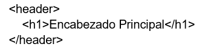
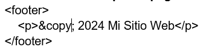
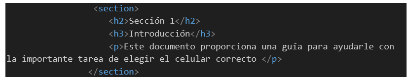

Trabajo Practico N°1
Lenguaje de Programación III
Alumno: Lescano, Mariana Belén
1) Defina que es HTML5 y establezca diferencias con las versiones anteriores.
1) HTML5 es la quinta versión del lenguaje de marcado de hipertexto (HTML), que es el estándar utilizado para crear páginas web. HTML5 trajo consigo varias mejoras y características nuevas en comparación con sus versiones anteriores. Algunas de las diferencias clave incluyen:
Nuevas etiquetas semánticas: HTML5 introduce etiquetas semánticas como header, footer, nav, article, section, entre otras, que facilitan la estructuración y comprensión del contenido de la página.
Soporte multimedia mejorado: HTML5 ofrece soporte nativo para audio y video. Las etiquetas audio y video permiten incrustar medios directamente en las páginas web.
HTML5 introduce el soporte mejorado para gráficos vectoriales escalables (SVG), lo que permite crear gráficos y animaciones complejas sin necesidad de plugins.
Mejoras en formularios: HTML5 simplifica la creación de formularios web con nuevas características
Almacenamiento local: HTML5 introduce APIs como Web Storage y IndexedDB, que permiten a las aplicaciones web almacenar datos localmente en el navegador del usuario, lo que mejora el rendimiento y la experiencia de usuario.
Compatibilidad con dispositivos móviles: HTML5 está diseñado teniendo en cuenta los dispositivos móviles, lo que permite la creación de páginas web responsivas y optimizadas para diferentes tamaños de pantalla y dispositivos táctiles.
2) Explique que entiende por semantica
Se refiere al significado o la interpretación del contenido de una página web por parte de los usuarios y los motores de búsqueda. En otras palabras, se trata de utilizar etiquetas y elementos HTML de manera que reflejen correctamente la estructura y el propósito del contenido que están marcando. El uso adecuado de la semántica en HTML no solo mejora la accesibilidad y la usabilidad de una página web, sino que también tiene beneficios para el SEO (optimización de motores de búsqueda), ya que los motores de búsqueda pueden entender mejor la estructura y el contenido de la página, lo que puede resultar en un mejor posicionamiento en los resultados de búsqueda. En resumen, la semántica en HTML se trata de utilizar etiquetas y elementos de manera que comuniquen de manera clara y precisa la estructura y el propósito del contenido de una página web.
3) Defina y ejemplifique las etiquetas más utilizadas en HTML5.
header: Define la cabecera de una sección o de todo el documento. Lo utilizo para el logo y barra de menu.

footer: Define el pie de página de una sección o de todo el documento.

nav: Define una sección de navegación.
article: Define un contenido independiente que podría ser reutilizable, como un artículo de blog o una publicación en redes sociales.
section: Define una sección genérica dentro de un documento.

aside: Define un contenido secundario relacionado con el contenido circundante.
4) Defina que es el renderizado, indicando quienes actuarian en tal proceso
El renderizado es el proceso mediante el cual un navegador web interpreta el código HTML, CSS y JavaScript de una página web y lo convierte en la representación visual que los usuarios ven en sus dispositivos. En este proceso intervienen varios componentes:
Motor de renderizado del navegador: Es el software encargado de interpretar el código HTML, CSS y JavaScript, y de convertirlo en la representación visual de la página web. Ejemplos de motores de renderizado populares son Blink (utilizado en Google Chrome), Gecko (utilizado en Mozilla Firefox), WebKit (utilizado en Safari) y Trident (utilizado en versiones antiguas de Internet Explorer).
Interpretador de HTML: Analiza el código HTML y crea un árbol de objetos conocido como el DOM (Document Object Model).
Interpretador de CSS: Procesa las reglas de estilo CSS y calcula cómo se aplicarán al DOM para determinar la apariencia visual de la página.
Interpretador de JavaScript: Ejecuta el código JavaScript de la página, lo que puede afectar dinámicamente al contenido y al estilo de la página.
Una vez que todos estos componentes han procesado sus respectivas partes del código, el navegador combina la información para crear la representación visual final de la página web, que es lo que los usuarios ven y con lo que pueden interactuar en sus dispositivos. Este proceso de renderizado ocurre cada vez que se carga una página web nueva o cuando se realizan cambios dinámicos en una página existente.
5) Estructurar una pagina
Título de la página